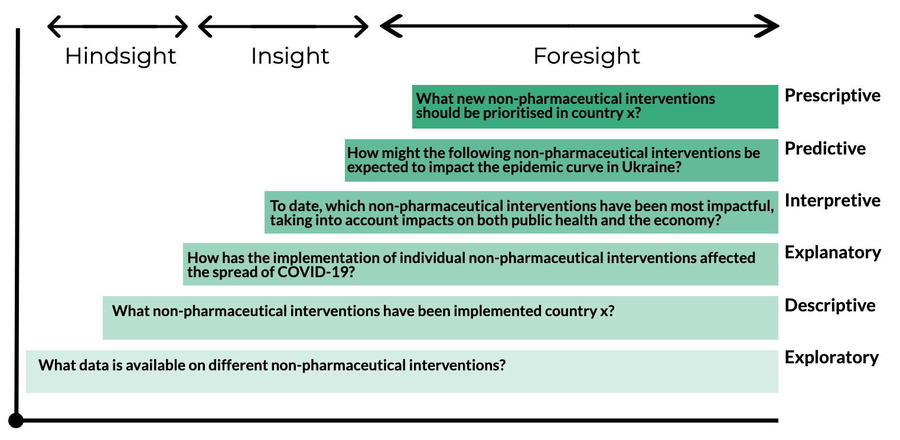
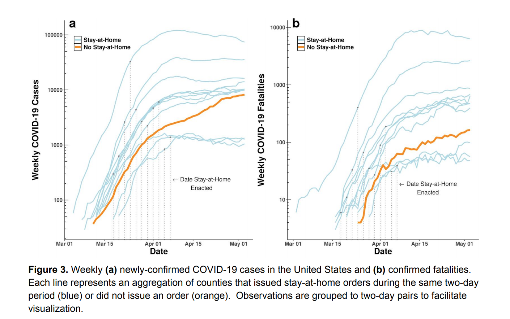

The Art of Good Data Questions
Examples from the COVID-19 Pandemic
Created by OCHA's Centre for Humanitarian Data / @humdata
Press right on your keyboard or swipe left to navigate.
“If I had an hour to solve a problem and my life depended on the solution, I would spend the first 55 minutes determining the proper question to ask, for once I know the proper question, I could solve the problem in less than five minutes.”- Albert Einstein
Good data-driven questions are at the heart of all data exercises. Questions drive our data collection, focus our analysis and shape our communication. In this session, we get back to basics to learn the art of good questions.
This session includes a series of slides to build your knowledge, and a short quiz to test your knowledge. The expected length of time to complete all segments is 10 minutes.
In this introductory session to formulating questions using examples from the COVID-19 pandemic, you will learn:
- Why we ask framing questions and why they matter;
- The elements of good framing questions; and
- How framing questions shape analysis.
The Role of Questions
We Ask Questions to Frame & Collect
The ability to formulate good questions is a uniquely powerful tool for unlocking value in data. Many of the “fatal” pitfalls of data work can be avoided by spending the time to get your question right
We formulate questions to frame our data exercises. These framing questions can be thought of as our research question. They help define the data we need and guides our entire process. Data-driven insight starts with good framing questions.
We also ask questions to gather data. These types of questions help us bring together the data we need to answer our framing question. How we ask these question shapes the answers we get and therefore the resulting data. High quality data start with good data collection questions.
Ask, Answer, Act
Clear framing questions start and bind our data exercises. They are key to ensuring you acquire the data you need, unlock value and insight in that data, and use that insight to drive action. In short, ask, answer, act.
Every data exercise, whether you are starting a multi-sector needs assessment, conducting analysis for an Humanitarian Needs Overview or assessing the effectiveness of a community meeting, requires that you to first define the question(s) you are trying to answer.

Questions That Frame Data Exercises
A framing question is a fundamental element in any data exercise and also frequently an under-appreciated and overlooked part of the process. Why do framing questions matter?
- They give our data exercises direction and focus.
- They inform our actions and outputs at every step of the exercise.
- They keep data processes aligned to a common reference, making sure we collect only the data we do not need and produce the type of analysis expected to help us make decisions.
Good Questions Anchor & Clarify
Questions anchor your data exercise and help you find the answers you need to make data informed decisions. To do this well, questions should be:
- Specific enough to tell us what needs to be analysed, where, when and on what scale;
- Relevant to an objective and focused on what needs to be understood in order to make a decision;
- Comprehensive of everything that needs to be understood in order to make that decision. We do not want to be left still seeking answers; and
- Realistic. Given data availability and resource constraints, is what we want to know possible to know?
Getting to the right question takes time but spending that time upfront can save you disappointment down the line.
Getting Specific
A good framing question establishes what we want to know, reduces ambiguity and provides us with a common understanding.
We often start with broad concepts. Specific dimensions of these concepts are then defined, which in turn helps crystallise indicators for understanding those dimension and hones us in on the specific data needed to measure those indicators.

Make it Relevant
Data exercises can go wrong when they do not provide decision makers with the guidance they need to act. Ensuring that our data question is relevant is how we avoid this. Good questions should be of interest to your audience.
Feasible
There are more interesting questions that can be asked than the resources available to answr them.
Staying in the Realm of the Possible
There are more interesting questions that can be asked than the resources available to answr them.
Asking the Right Question
Evidence that we Need Better Questions
TThe lack of a clear question to be answering or a clear direction to go in with the available data. Data Literacy Research.
The Role of Framing Questions in Analysis
Understanding the type of analysis you need to do, or what you want to know, will shape your framing question. Are you trying to describe, explain, interpret, or anticipate a phenomenon, or are you trying to prescribe a response to an phenomenon? Different types, or stages, of analysis exist on a specturm and build on one another.

COVID-19 Framing Questions
Take, for example, the following questions related to the implementation of non-pharmaceutical interventions.
Descriptive Questions
Descriptive questions seek to summarise and compare data. These types of framing questions ask who, what, how many, when and where. They focus our analysis on comparing and contrast to find patterns, trends, and anomalies or outliers. In short they describe. Examples of descriptive data questions could be:
- What measures have governments taken to slow the spread of COVID-19 in low and middle income countries?
- How many cases of COVID-19 have been reported in locations with a Humanitarian Response Plan?
- What are community perceptions about the COIVD-19 pandemic in Global Humanitarian Response Plan Countries?
Press down to learn more about descriptive questions.
Descriptive Products & Analysis
Descriptive analysis and products help users understand different a problem space and its various facets but do not attempt to provide an explanation or interpretation.
Explanatory Data Questions
Typically, we want more from our data than a summary or snapshot, we want insight. We may want to find causal relationship or understand why something is happening and that is when we turn to explanatory quesitons and analysis.
- We ask explanatory questions when we want to find associations, correlations, connections and relationships between data points.
- These questions ask why and how things happened as they did.
- They often build on descriptive analysis, asking what does it mean, why is it like this or what factors are at play.
Press down to learn more about explanatory analysis.
Explanatory Analysis to Uncover Trends
Explanatory data anlysis builds on descriptive anlysis. For example, an explanatory data question could ask about how a given non-pharmaceutical intervention has impacted the spread of the virus.
Interpretive Questions
Interpretive questions aim to move analysis beyond stating what has been found in the data, whether that's a summary or a trend, towards drawing well-supported conclusions based on data. Its at this stage where the analyst will rate sererity, evaluate the evidence and prioritise issues.
An example of an interpretive question is:
- Taking into consideration both their impact on the spread of COVID-19 and their impact on the economy, which non-pharmaceutical intervention are the most effective?
Press down to learn more about interpretive analysis.
Severity & Risk
The Inform Risk Index assesses the underlying risk in trying to answer the question of which countries are at risk from health and humanitarian impacts of COVID-19 that could overwhelm current national response capacity.
Predicitive Questions
Predictive (or anticipatory) questions help to shape the analysis of current and historical data to anticipate an event. They may ask to extend current conditions to forecast future outcomes, to evaluate likelihood and impact or to identify triggers. Examples of predictive questions could be the following:
- What is the projective scale of the the scale of the crisis (i.e. the total number of cases, severe cases and deaths) specific locations such as refugee camps;?
- How could the following non-pharmaceutical interventions can be expected to impact the epidemic curve?
Predicitive Analysis
Predictive models can forecast impact of specific events.